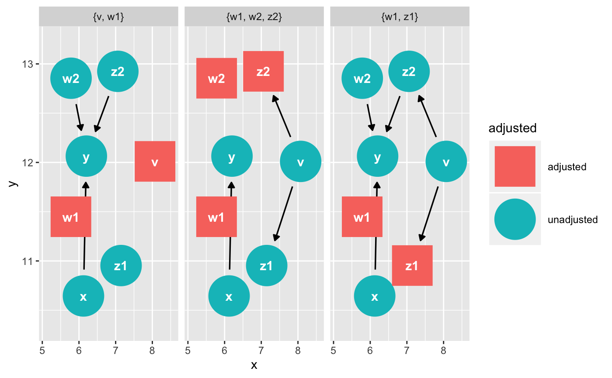
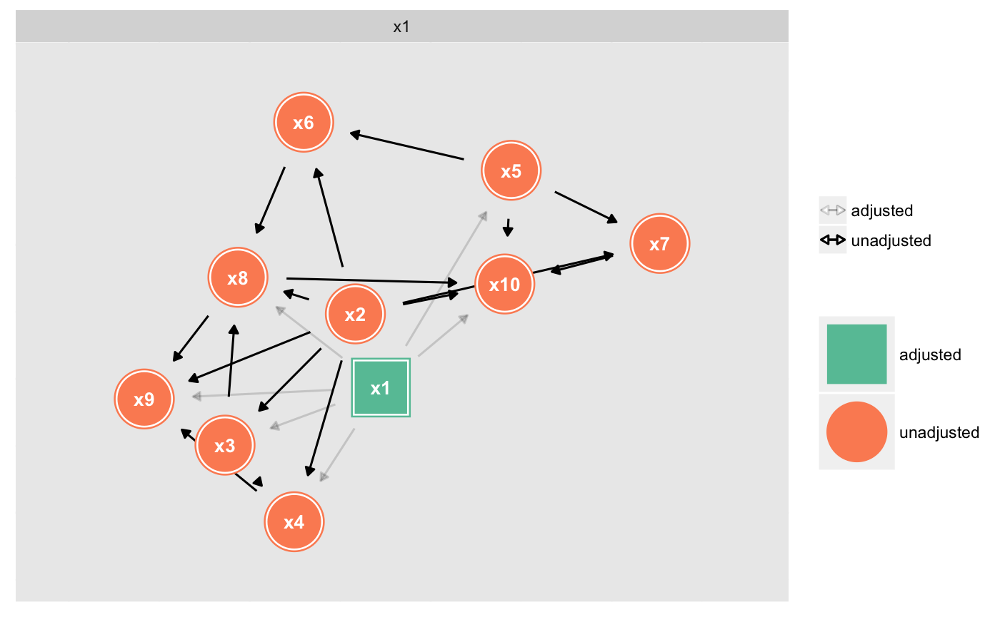

See dagitty::adjustmentSets() for details.
dag_adjustment_sets(.tdy_dag, exposure = NULL, outcome = NULL, ...) ggdag_adjustment_set(.tdy_dag, exposure = NULL, outcome = NULL, ..., node_size = 16, text_size = 3.88, text_col = "white", node = TRUE, text = TRUE, use_labels = NULL)
| .tdy_dag | input graph, an object of class |
|---|---|
| exposure | a character vector, the exposure variable. Default is
|
| outcome | a character vector, the outcome variable. Default is
|
| ... | additional arguments to |
| node_size | size of DAG node |
| text_size | size of DAG text |
| text_col | color of DAG text |
| node | logical. Should nodes be included in the DAG? |
| text | logical. Should text be included in the DAG? |
| use_labels | a string. Variable to use for |
a tidy_dagitty with an adjusted column and set
column, indicating adjustment status and DAG ID, respectively, for the
adjustment sets or a ggplot
dag <- dagify(y ~ x + z2 + w2 + w1, x ~ z1 + w1, z1 ~ w1 + v, z2 ~ w2 + v, w1 ~~ w2, exposure = "x", outcome = "y") tidy_dagitty(dag) %>% dag_adjustment_sets()#> # A tibble: 36 x 14 #> name from x y direction type to xend yend .ggraph.orig_in… #> <chr> <chr> <dbl> <dbl> <fct> <fct> <chr> <dbl> <dbl> <int> #> 1 v v 7.21 14.3 -> direct… z1 6.29 15.4 1 #> 2 v v 7.21 14.3 -> direct… z2 6.20 13.4 1 #> 3 w1 w1 4.94 14.9 -> direct… x 5.25 15.7 2 #> 4 w1 w1 4.94 14.9 -> direct… y 5.32 14.2 2 #> 5 w1 w1 4.94 14.9 -> direct… z1 6.29 15.4 2 #> 6 w1 w1 4.94 14.9 <-> bidire… w2 4.92 13.4 2 #> 7 w2 w2 4.92 13.4 -> direct… y 5.32 14.2 3 #> 8 w2 w2 4.92 13.4 -> direct… z2 6.20 13.4 3 #> 9 x x 5.25 15.7 -> direct… y 5.32 14.2 4 #> 10 z1 z1 6.29 15.4 -> direct… x 5.25 15.7 5 #> # ... with 26 more rows, and 4 more variables: circular <lgl>, #> # .ggraph.index <int>, adjusted <chr>, set <chr>ggdag_adjustment_set(dag)